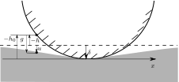

Usage
The code is documented via Python’s documentation strings that can be accesses via the help command or by appending a questions mark ? in ipython/jupyter. There are two command line tools available that may be a good starting point. They are in the commandline subdirectory:
soft_wall.py: Command line front end for calculations with soft (possibly adhesive) interactions between rigid and elastic flat. This is a stub rather than a fully featured command line tool that can be used as a starting point for modified script. The present implementation is set up for a solution of Martin Müser’s contact mechanics challenge.
Have a look in the examples folder as well as in the tests.
Conventions
Coordinate system
Definition of gap, heights and displacements
\(h_0(x)\) is the content of the topography.
\(\delta\): rigid body penetration
\(h(x) = \delta + h_0(x)\) is the height of the indenter with respect to the surface of the undeformed halfspace
\(u(x)\) displacement of the halfspace
\(g(x) = u(x) - h(x) = u(x) - (\delta + h_0(x))\): gap
The simulation models the indentation of an elastic halfspace (flat) with a rigid indenter whose geometry is given by the topography.
In the picture above the maximum value of the topography \(h_0(x)\) is 0. First contact occurs at \(\delta = 0 ` and the load will increase as `delta\) increases.
If \(h_0(x)\) contains positive values the first contact will occur at \(\delta < 0\)